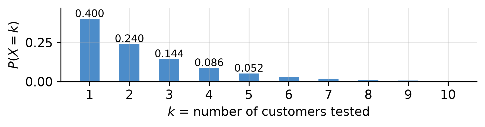
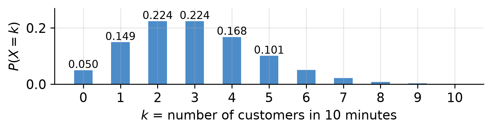
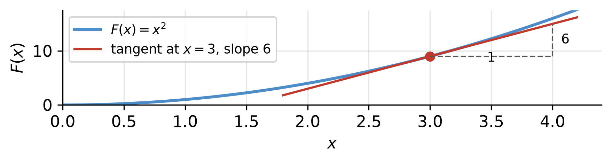
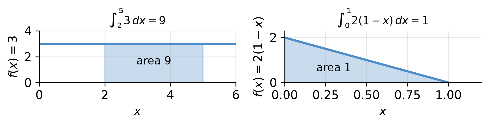
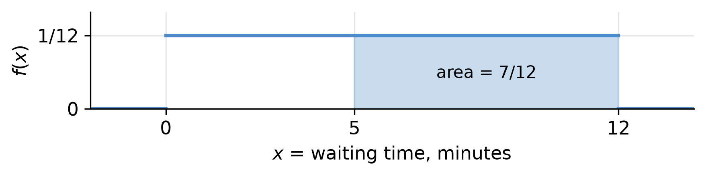
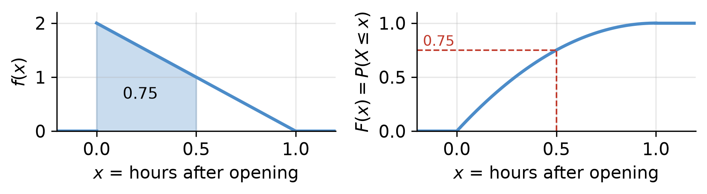

4 Counting events and measuring time
\[ \newcommand{\E}{\mathbb{E}} \newcommand{\Var}{\operatorname{Var}} \newcommand{\Cov}{\operatorname{Cov}} \newcommand{\Corr}{\operatorname{Corr}} \newcommand{\Prob}{\mathbb{P}} \newcommand{\R}{\mathbb{R}} \]
Back to Marat’s optician’s shop on Bauman Street in Kazan. This Saturday nobody has booked the free eye test. Walk-in customers come in one at a time, Marat tests each of them, and each orders glasses with probability 0.4, independently of the others. Marat doesn’t make his first coffee until the first pair is sold. (The waiting-room machine has been repaired, so the habit now costs him something.)
So the number he cares about this morning is: count the customers Marat tests up to and including the first one who orders. Lecture 3 (Exercise 3c) said this count is not binomial. Is the first order most likely to come from customer 1, 2 or 3? How many customers should Marat expect to test before his coffee?
4.1 The geometric distribution: waiting for the first success
Example 4.1 (Marat’s first order) Given: walk-in customers come one after another; each orders glasses with probability 0.4 and does not with probability 0.6; they decide independently.
The variable: \(X\) = the number of customers Marat tests up to and including the first one who orders. Number of trials fixed? No: Marat keeps testing until someone orders. So \(X\) is not binomial. It is geometric (Definition 4.1, right after this example).
Find \(\Prob(X=1)\), \(\Prob(X=2)\), \(\Prob(X=3)\) and \(\Prob(X>3)\).
Solution. Write O for “orders” and N for “does not”, as in Lecture 3. Each value of \(X\) comes from one path: some N’s, then an O. The customers are independent (Definition 2.3), so we multiply along the path.
- \(X=1\): path O, \(\Prob(X=1)=0.4\).
- \(X=2\): path NO, \(\Prob(X=2)=0.6\cdot0.4=0.24\).
- \(X=3\): path NNO, \(\Prob(X=3)=0.6\cdot0.6\cdot0.4=0.144\).
\(X>3\) means that the first three customers all say no: NNN, whatever comes after. So \(\Prob(X>3)=0.6^3=0.216\).
The first order is most likely to come from customer 1; each later step multiplies by 0.6.
Compare with Lecture 3, where we counted the orders among 3 booked customers; call that count \(Y\sim\operatorname{Bin}(3,\,0.4)\). For \(Y\) the number of trials is fixed and the number of successes is random. For \(X\) it is the other way round: one success, a random number of trials. And \(\Prob(X>3)=\Prob(Y=0)=0.216\): both are “three noes in a row”.
Definition 4.1 (Geometric distribution) Repeat independent trials, each a success with the same probability \(p\), where \(0<p\le1\). Let \(X\) be the number of the trial on which the first success happens. Then \(X\) has the geometric distribution with parameter \(p\), written \(X\sim\operatorname{Geom}(p)\), and \[ \Prob(X=k)=(1-p)^{k-1}p,\qquad k=1,2,3,\dots \tag{4.1}\]
NoteHow to read \(X\sim\operatorname{Geom}(p)\) and \(k=1,2,3,\dots\)
\(X\sim\operatorname{Geom}(p)\) reads “X has the geometric distribution with parameter p”. Marat’s \(X\) is \(\operatorname{Geom}(0.4)\).
\(k=1,2,3,\dots\) reads “k equals one, two, three, and so on”. The list has no last value: there is no largest possible \(X\). Marat could, in principle, test 20 customers before the first order. That has probability \(0.6^{19}\cdot0.4\approx0.00002\), tiny but not zero.
In Equation 4.1, \((1-p)^{k-1}p\) means “\(k-1\) failures, then a success”. For Marat and \(k=3\): \((1-0.4)^{3-1}\cdot0.4=0.6^2\cdot0.4=0.144\), as in Example 4.1.
As for \(X>3\), \(X>k\) means the first \(k\) trials all fail, so \(\Prob(X>k)=(1-p)^k\). The probabilities \(p,\ (1-p)p,\ (1-p)^2p,\dots\) form a geometric progression, hence the name; it has nothing to do with geometric probability (Definition 1.9). Some books and some software count the failures before the first success, starting at 0. We count the trials, including the success, starting at 1.
Theorem 4.1 (Mean and variance of the geometric distribution) If \(X\sim\operatorname{Geom}(p)\), then \[ \E[X]=\frac1p,\qquad \Var(X)=\frac{1-p}{p^2}. \]
Proof
Write \(m=\E[X]\) and look at the first trial. With probability \(p\) it is a success, and then \(X=1\). With probability \(1-p\) it is a failure. Then one trial is used up, and because the trials are independent, the waiting starts again from scratch: on average \(m\) more trials. So \[ m=p\cdot1+(1-p)(1+m)=1+(1-p)\,m . \] Subtract \((1-p)m\) from both sides: \(p\,m=1\), so \(m=1/p\). A similar first-step argument for \(\E[X^2]\), followed by Theorem 3.2, gives the variance. We skip that algebra.
For Marat, \(p=0.4\): \(\E[X]=1/0.4=2.5\) customers, \(\Var(X)=0.6/0.4^2=3.75\) and \(\operatorname{SD}(X)=\sqrt{3.75}\approx1.94\) customers. As with Lecture 3’s 1,000 Saturdays: among 1,000 customers about 400 order, one order per \(1000/400=2.5\) customers. The most likely value is 1, the mean 2.5, and the SD almost as large as the mean: some mornings the coffee comes late.
4.2 Drawing without putting back: the hypergeometric distribution
Lecture 3, Exercise 3b, came back to Lecture 2’s box of LED bulbs.
Given: 12 bulbs, 3 of them faulty; Oksana takes 2 without putting the first one back.
The variable: \(X\) = the number of faulty bulbs among the 2. Number of trials fixed? Yes, 2. Same probability on every draw? No: after the first draw it is \(2/11\) or \(3/11\). So \(X\) is not binomial.
We count instead, as in Example 1.7. There are \(\binom{12}{2}=66\) equally likely pairs, and one faulty bulb means one of the 3 faulty and one of the 9 good: \[ \Prob(X=1)=\frac{\binom31\binom91}{\binom{12}2}=\frac{27}{66}\approx0.409 . \] In the same way \(\Prob(X=0)=\binom92/66=36/66\) and \(\Prob(X=2)=\binom32/66=3/66\).
Definition 4.2 (Hypergeometric distribution) A box has \(N\) items, \(M\) of them special (faulty, say). Take \(n\) items without putting them back, all sets of \(n\) items equally likely. The number \(X\) of special items in the sample has the hypergeometric distribution: \[ \Prob(X=k)=\frac{\binom{M}{k}\binom{N-M}{n-k}}{\binom{N}{n}} . \] Its mean is \(\E[X]=n\,\dfrac{M}{N}\).
For the bulbs, \(N=12\), \(M=3\), \(n=2\), and \(\E[X]=2\cdot3/12=0.5\) faulty bulbs. The idea behind \(nM/N\): each of the \(n\) items taken is special with probability \(M/N\), and expected values add up (we prove that in Lecture 6). In this course we use the rule: if the sample is under about 5% of the box, taking items out hardly changes the rest, and \(\operatorname{Bin}(n,\,M/N)\) is a fine approximation.
4.3 The Poisson distribution: counting events in time
Dina runs a parcel pickup point in Perm, in a ground-floor room it shares with a key-cutting stall. On weekday afternoons it gets on average 3 customers per 10 minutes, one at a time, and they don’t coordinate. How many will come in the next 10 minutes? There is no list of \(n\) people who might come, so the binomial doesn’t fit, and there is no upper limit. What we know is the average rate. The distribution for this is named after Siméon Denis Poisson (say “pwa-SON”).
NoteHow to read \(\lambda\), \(\operatorname{Pois}(\lambda)\), \(e^{-3}\) and \(k!\)
\(\lambda\) is the small Greek letter lambda (“LAM-da”): here, the average number of events in the interval we look at. For Dina, \(\lambda=3\) customers per 10 minutes. \(X\sim\operatorname{Pois}(3)\) reads “X has the Poisson distribution with parameter 3”.
\(e\approx2.718\) is a fixed number, like \(\pi\approx3.14\). \(e^{-3}\) reads “e to the minus three” and means \(1/e^3=1/20.09\approx0.0498\). On a calculator use the \(e^x\) key (often Shift + ln) and enter \(-3\).
\(k!\) reads “k factorial” (Lecture 1): multiply the whole numbers from \(k\) down to 1, so \(4!=4\cdot3\cdot2\cdot1=24\), \(1!=1\), and by agreement \(0!=1\). With both: \(e^{-3}\cdot3^2/2!=0.0498\cdot9/2\approx0.224\).
Definition 4.3 (Poisson distribution) A random variable \(X\) has the Poisson distribution with parameter \(\lambda>0\), written \(X\sim\operatorname{Pois}(\lambda)\), if \[ \Prob(X=k)=e^{-\lambda}\,\frac{\lambda^k}{k!},\qquad k=0,1,2,\dots \tag{4.2}\] It is the usual model for the number of events in a fixed interval of time when the events happen one at a time, independently of each other, at a constant average rate. Then \(\lambda\) is that average number of events in the interval.
Example 4.2 (Customers at Dina’s pickup point) Given: on average 3 customers per 10 minutes; they come one at a time, independently, at a steady rate.
The variable: \(X\) = the number of customers in the next 10 minutes. Number of trials fixed? No, and no upper limit. Steady average rate? Yes, 3 per 10 minutes. So \(X\sim\operatorname{Pois}(3)\).
Find \(\Prob(X=k)\) for \(k=0,1,2,3\), and the probability of at least 4 customers.
Solution. Put \(\lambda=3\) into Equation 4.2, with \(e^{-3}\approx0.0498\):
- \(\Prob(X=0)=e^{-3}\cdot3^0/0!=e^{-3}\approx0.050\);
- \(\Prob(X=1)=e^{-3}\cdot3^1/1!=3e^{-3}\approx0.149\);
- \(\Prob(X=2)=e^{-3}\cdot3^2/2!=4.5e^{-3}\approx0.224\);
- \(\Prob(X=3)=e^{-3}\cdot3^3/3!=4.5e^{-3}\approx0.224\).
“At least 4” has no last value, so use the complement rule (Theorem 1.2): \[ \Prob(X\ge4)=1-\Prob(X\le3)\approx1-(0.050+0.149+0.224+0.224)=1-0.647=0.353 . \] About one 10-minute stretch in three brings 4 or more customers.

The parameter belongs to the interval: 3 customers per 10 minutes is 6 per 20 minutes. So the count for the next 20 minutes is \(\operatorname{Pois}(6)\), and nobody comes in 20 minutes with probability \(e^{-6}\approx0.0025\). A common mistake is to keep \(\lambda=3\) for every interval length.
4.4 When the binomial looks like the Poisson
The Poisson is also a shortcut for the binomial when there are many trials and success is rare.
Theorem 4.2 (Poisson approximation to the binomial) Let \(X\sim\operatorname{Bin}(n,p)\). If \(n\) is large and \(p\) is small, then \[ \Prob(X=k)\approx e^{-\lambda}\,\frac{\lambda^k}{k!}\quad\text{with }\lambda=np,\qquad k=0,1,2,\dots \] Our rule of thumb (textbooks use slightly different ones): the approximation is good when \(n\ge100\) and \(np\le10\).
Proof
Idea. Put \(\lambda=np\), so \(p=\lambda/n\), and write \(\binom nk=\frac{n(n-1)\cdots(n-k+1)}{k!}\) (Theorem 1.4). Then \[ \Prob(X=k)=\frac{n(n-1)\cdots(n-k+1)}{n^k}\cdot\frac{\lambda^k}{k!}\cdot\Big(1-\frac\lambda n\Big)^{n}\Big/\Big(1-\frac\lambda n\Big)^{k}. \] Keep \(k\) and \(\lambda\) fixed and let \(n\) grow. The first fraction is a product of \(k\) fractions \(\frac nn,\frac{n-1}n,\dots\), each close to 1, and so is the last factor. And \((1-\lambda/n)^n\) gets closer and closer to \(e^{-\lambda}\): for \(\lambda=3\) and \(n=1000\) it is \(0.997^{1000}\approx0.0496\), against \(e^{-3}\approx0.0498\). What is left is \(e^{-\lambda}\lambda^k/k!\).
Theorem 4.3 (Mean and variance of the Poisson distribution) If \(X\sim\operatorname{Pois}(\lambda)\), then \(\E[X]=\lambda\) and \(\Var(X)=\lambda\).
Proof
Idea. By Theorem 4.2, \(\operatorname{Pois}(\lambda)\) is what \(\operatorname{Bin}(n,\lambda/n)\) turns into for large \(n\). By Theorem 3.4 that binomial has mean \(n\cdot\frac\lambda n=\lambda\) and variance \(\lambda\big(1-\frac\lambda n\big)\), which gets closer and closer to \(\lambda\). A full proof adds up infinite sums; we skip it.
So Dina expects 3 customers per 10 minutes, where we started, with standard deviation \(\sqrt3\approx1.73\).
Example 4.3 (Returned parcels) Given: Dina’s point hands out 500 parcels a day; each parcel is returned to the seller with probability 0.004, independently of the others.
The variable: \(X\) = the number of returned parcels in a day. Number of trials fixed? Yes, \(n=500\). So \(X\sim\operatorname{Bin}(500,\,0.004)\). Since \(n=500\ge100\) and \(np=500\cdot0.004=2\le10\), \(X\approx\operatorname{Pois}(2)\). Compare the two for \(k=0,\dots,4\).
Solution. The binomial needs powers like \(0.996^{500}\). The Poisson needs only \(e^{-2}\approx0.1353\) and Equation 4.2, for example \(\Prob(X=2)\approx e^{-2}\cdot2^2/2!=2e^{-2}\approx0.2707\). The binomial row is computed exactly:
| \(k\) | 0 | 1 | 2 | 3 | 4 |
|---|---|---|---|---|---|
| \(\operatorname{Bin}(500,\,0.004)\) | 0.1348 | 0.2707 | 0.2712 | 0.1808 | 0.0902 |
| \(\operatorname{Pois}(2)\) | 0.1353 | 0.2707 | 0.2707 | 0.1804 | 0.0902 |
The two rows differ by less than 0.001 everywhere. The probability of a day with no returns is about 0.135.
Which distribution? Find what \(X\) counts, then ask what is fixed in advance (Table 4.1).
| Distribution | What \(X\) counts | Fixed | Values |
|---|---|---|---|
| Bernoulli(\(p\)) | success in one trial | \(p\) | \(0,1\) |
| \(\operatorname{Bin}(n,p)\) | successes in \(n\) trials | \(n\), \(p\) | \(0,\dots,n\) |
| \(\operatorname{Geom}(p)\) | trials up to and including the first success | \(p\) only | \(1,2,3,\dots\) |
| Hypergeometric | special items, no putting back | \(N\), \(M\), \(n\) | \(0,\dots,n\) |
| \(\operatorname{Pois}(\lambda)\) | events in an interval | rate \(\lambda\) | \(0,1,2,\dots\) |
4.5 Slopes and areas: a refresher on derivatives and integrals
Lena’s waiting time for her office shuttle (Seminar 1, Problem 12) can be any number from 0 to 12 minutes, and each single value has probability 0, so a PMF would be 0 everywhere. Instead we give probabilities to intervals, as areas under a curve. For that we need two tools from school, the derivative (a slope) and the integral (an area), and only the parts we use.
Derivatives: slopes
The derivative of a function \(F\) at a point \(x\), written \(F'(x)\), is the slope of the graph of \(F\) at \(x\): how fast \(F\) grows there.
NoteHow to read \(F'(x)\)
\(F'(x)\) reads “F prime of x” or “the derivative of F at x”. It is the slope of the graph at the point \(x\): how many units \(F\) rises per one unit to the right. One instance: for \(F(x)=x^2\) the derivative is \(F'(x)=2x\), so at \(x=3\) the slope is \(F'(3)=2\cdot3=6\).

We need only these rules (\(c\) is a number, \(n\) a whole number):
| Function | Derivative | Example |
|---|---|---|
| a number \(c\) | \(0\) | \((5)'=0\): a flat line has slope 0 |
| \(x^n\) | \(n\,x^{n-1}\) | \((x)'=1\), \((x^2)'=2x\), \((x^3)'=3x^2\) |
| \(c\) times a function | \(c\) times its derivative | \((4x^3)'=12x^2\) |
| sum or difference | sum or difference of the derivatives | \((2x-x^2)'=2-2x\) |
Integrals: areas
Now the other direction. Take a function \(f\) that is never negative, and two numbers \(a<b\). The integral of \(f\) from \(a\) to \(b\), written \(\int_a^b f(x)\,dx\), is the area between the graph of \(f\) and the \(x\)-axis, from \(x=a\) to \(x=b\).
For a curve we use one rule, which links areas to slopes: integration undoes differentiation. Find a function \(G\) whose derivative is \(f\), that is \(G'(x)=f(x)\). Then \[ \int_a^b f(x)\,dx=G(b)-G(a)=\big[G(x)\big]_a^b . \tag{4.3}\] Why? Push the right end \(x\) of the area a little to the right, by a width \(w\): the area grows by a thin strip of height about \(f(x)\), so by about \(f(x)\cdot w\). The area grows at the rate \(f(x)\): it is a function whose derivative is \(f\). Any other \(G\) with \(G'=f\) differs from it only by a constant, and the constant cancels in \(G(b)-G(a)\).
NoteHow to read \(\int_a^b f(x),dx\) and \(\big[G(x)\big]_a^b\)
\(\int\) is a stretched letter S, for “sum”: the area is a sum of very thin vertical strips. \(\int_a^b f(x)\,dx\) reads “the integral from a to b of f of x, d x”. The number at the bottom (\(a\)) is where the area starts, the number on top (\(b\)) is where it stops. \(dx\) says that \(x\) is the variable along the horizontal axis; think of it as the width of one thin strip, whose height is \(f(x)\).
\(\big[G(x)\big]_a^b\) reads “G of x, from a to b”. It is short for \(G(b)-G(a)\): put in the top number, put in the bottom number, subtract.
One instance of both: \(\int_2^5 3\,dx\) is the area under the flat line at height 3 from \(x=2\) to \(x=5\), a rectangle of width \(5-2=3\) and height 3, so the area is \(3\cdot3=9\). With the rule: \(G(x)=3x\) has \(G'(x)=3\), and \(\big[3x\big]_2^5=3\cdot5-3\cdot2=15-6=9\). Same answer.
To find \(G\), read the derivative table backwards (and check by taking the derivative of the right-hand column):
| Function \(f(x)\) | A function \(G(x)\) with \(G'(x)=f(x)\) |
|---|---|
| a number \(c\) | \(c\,x\) |
| \(x^n\) | \(x^{n+1}/(n+1)\); so \(x\) gives \(x^2/2\), and \(x^2\) gives \(x^3/3\) |
| \(c\) times a function | \(c\) times its \(G\) |
| sum or difference | sum or difference of the \(G\)’s |
The one worked integral of this section is \(\int_0^1 2(1-x)\,dx\). Write \(2(1-x)=2-2x\). By the table, \(G(x)=2x-2\cdot\frac{x^2}{2}=2x-x^2\); check: \(G'(x)=2-2x\). Then \[ \int_0^1 (2-2x)\,dx=\big[2x-x^2\big]_0^1=(2\cdot1-1^2)-(2\cdot0-0^2)=1 . \] Check with geometry: the graph of \(2-2x\) falls in a straight line from height 2 at \(x=0\) to 0 at \(x=1\), and the triangle under it has area \(\frac12\cdot1\cdot2=1\) (Figure 4.4). This function comes back in a moment as a density.

4.6 Continuous random variables
Back to Lena’s shuttle, every 12 minutes; let \(X\) be her waiting time in minutes. Every moment of arrival is equally likely, so spread the probability evenly: a flat line at height \(1/12\) from 0 to 12, and 0 outside (Figure 4.5). The total area is \(12\cdot\frac1{12}=1\). The probability that she waits more than 5 minutes is the area from 5 to 12, width 7 times height \(1/12\), so \(7/12\): the answer of Seminar 1, Problem 12, read as an area.

Definition 4.4 (Continuous random variable, density) A random variable \(X\) is continuous if there is a function \(f(x)\), called its density (probability density function), such that
- \(f(x)\ge0\) for every \(x\);
- the total area under the graph of \(f\) is 1;
- for any numbers \(a\le b\), \(\Prob(a\le X\le b)=\int_a^b f(x)\,dx\).
Every density in this lecture is 0 outside one interval of possible values, from a left end \(c\) to a right end \(d\). To the left of \(c\) there is no area, so we always start integrating at \(c\), and property 2 reads \(\int_c^d f(x)\,dx=1\). For the shuttle, \(c=0\), \(d=12\) and \(f(x)=1/12\) in between.
NoteHow to read \(f(x)\): a height, not a probability
\(f(x)\) reads “f of x” or “the density at x”. It is the height of the curve at \(x\), not a probability. Probabilities are areas: height times a width. So a density can be larger than 1. One instance with the function from the refresher, \(f(x)=2(1-x)\) on \([0,1]\) (all numbers from 0 to 1): at \(x=0\) the height is \(f(0)=2\). If \(X\) has this density, the probability of a narrow interval near 0 is height times width, \(\Prob(0\le X\le0.01)\approx2\cdot0.01=0.02\), a perfectly good probability (exactly: \(\big[2x-x^2\big]_0^{0.01}=0.0199\)).
Now the pitfall, the reverse of Lecture 3. For a continuous \(X\), a single value has no width, so no area: \(\Prob(X=x)=0\) for every \(x\). So \(\le\) and \(<\) give the same answer: \[ \Prob(a\le X\le b)=\Prob(a<X\le b)=\Prob(a\le X<b)=\Prob(a<X<b). \] This does not contradict Lecture 3. There \(X\) was discrete, \(\Prob(X=1)=0.432\) for Marat was not 0, and the boundary mattered. Here it carries no probability. As in Lecture 1, probability 0 is not impossible: Lena waits some exact time, but each exact time has probability 0.
Example 4.4 (Bakhyt’s first customer) Given: Bakhyt’s coffee kiosk at the river station in Omsk opens at 7:00. The first customer always comes within the first hour, more often early than late; Bakhyt’s model is the density \(f(x)=2(1-x)\) for \(0\le x\le1\), and \(f(x)=0\) otherwise.
The variable: \(X\) = the time in hours from opening to the first customer. A count or a measurement? A measurement: any number from 0 to 1. So \(X\) is continuous with density \(f(x)=2(1-x)\) on \([0,1]\).
Check that \(f\) is a density, and find the probability that the first customer comes in the first half hour.
Solution. \(f(x)\ge0\) for \(0\le x\le1\), and the total area is \(\int_0^1 2(1-x)\,dx=\big[2x-x^2\big]_0^1=1\) (the refresher). So \(f\) is a density. The first half hour is \(0\le X\le0.5\): \[ \Prob(X\le0.5)=\int_0^{0.5}(2-2x)\,dx=\big[2x-x^2\big]_0^{0.5}=(1-0.25)-0=0.75 . \] Three mornings in four, the first customer comes before 7:30.
Definition 4.5 (CDF of a continuous random variable) Let \(X\) be continuous with density \(f\), which is 0 outside the interval from \(c\) to \(d\). Its CDF is the same \(F\) as in Lecture 3 (Definition 3.3): \[ F(x)=\Prob(X\le x)=\int_c^x f(t)\,dt\qquad\text{for } c\le x\le d, \] with \(F(x)=0\) for \(x<c\) and \(F(x)=1\) for \(x>d\). The density is the slope of the CDF: \(f(x)=F'(x)\), except at the few points where \(f\) jumps.
In \(\int_c^x f(t)\,dt\) the letter \(x\) is already taken (it is where the area stops), so the variable along the axis gets another name, \(t\); read it “the integral from c to x of f of t, d t”. It is still the area under \(f\) from \(c\) up to \(x\). The rule \(f=F'\) is Equation 4.3 again: the area up to \(x\) grows at the rate \(f(x)\). For the kiosk, \(F(x)=\big[2t-t^2\big]_0^x=2x-x^2\) for \(0\le x\le1\), 0 to the left and 1 to the right, so \(F(0.5)=0.75\) as before; check: \(F'(x)=2-2x=f(x)\). A continuous CDF has no steps: it climbs smoothly from 0 to 1 (Figure 4.6).

Expected value and variance follow Lecture 3: the sum becomes an integral, and \(p(x_i)\) becomes \(f(x)\,dx\), the area of a thin strip.
Definition 4.6 (Expected value and variance of a continuous random variable) Let \(X\) be continuous with density \(f\), which is 0 outside the interval from \(c\) to \(d\). Then \[ \E[X]=\mu=\int_c^d x\,f(x)\,dx,\qquad \Var(X)=\int_c^d (x-\mu)^2f(x)\,dx, \] and \(\operatorname{SD}(X)=\sqrt{\Var(X)}\). More generally, \(\E[g(X)]=\int_c^d g(x)\,f(x)\,dx\), for example \(\E[X^2]=\int_c^d x^2f(x)\,dx\).
| Discrete (Lecture 3) | Continuous | |
|---|---|---|
| probabilities | \(p(x)=\Prob(X=x)\) | \(\Prob(a\le X\le b)=\int_a^b f(x)\,dx\) |
| expected value | \(\sum_i x_i\,p(x_i)\) | \(\int_c^d x\,f(x)\,dx\) |
| variance | \(\sum_i (x_i-\mu)^2p(x_i)\) | \(\int_c^d (x-\mu)^2f(x)\,dx\) |
The results of Lecture 3 still hold, with the same proofs and \(\sum\) replaced by \(\int\): the shortcut \(\Var(X)=\E[X^2]-\mu^2\) (Theorem 3.2) and the rules for \(aX+b\) (Theorem 3.3).
Back to the kiosk. Given: \(f(x)=2-2x\) for \(0\le x\le1\), 0 otherwise; \(X\) is the time in hours to the first customer. Multiply out first: \(x\,f(x)=2x-2x^2\) and \(x^2f(x)=2x^2-2x^3\). Then \[ \begin{aligned} \E[X]&=\int_0^1(2x-2x^2)\,dx=\Big[x^2-\frac{2x^3}{3}\Big]_0^1=1-\frac23=\frac13,\\ \E[X^2]&=\int_0^1(2x^2-2x^3)\,dx=\Big[\frac{2x^3}{3}-\frac{x^4}{2}\Big]_0^1=\frac23-\frac12=\frac16 . \end{aligned} \] On average the first customer comes after \(1/3\) hour, 20 minutes. By the shortcut, \(\Var(X)=\frac16-\big(\frac13\big)^2=\frac16-\frac19=\frac1{18}\approx0.0556\) hours squared. The standard deviation is \(\sqrt{1/18}\approx0.236\) hours, about 14 minutes. Hours squared mean nothing to Bakhyt; 20 minutes give or take 14 does.
4.7 The uniform distribution
The shuttle density was flat, and a flat density has its own name.
Definition 4.7 (Uniform distribution) A random variable \(X\) has the uniform distribution on the interval from \(a\) to \(b\), where \(a<b\), written \(X\sim\operatorname{U}(a,b)\), if its density is \[ f(x)=\frac{1}{b-a}\quad\text{for } a\le x\le b,\qquad f(x)=0\ \text{otherwise}. \] Its CDF is \(F(x)=\dfrac{x-a}{b-a}\) for \(a\le x\le b\), with \(F(x)=0\) for \(x<a\) and \(F(x)=1\) for \(x>b\).
NoteHow to read \(X\sim\operatorname{U}(a,b)\)
\(X\sim\operatorname{U}(a,b)\) reads “X is uniform on the interval from a to b”. The height \(\frac1{b-a}\) makes the rectangle’s area width times height equal to 1. For the shuttle, \(X\sim\operatorname{U}(0,12)\), the height is \(\frac1{12-0}=\frac1{12}\), and \(F(x)=\frac{x-0}{12-0}=\frac{x}{12}\).
The CDF comes from Definition 4.5 with left end \(a\): \(F(x)=\int_a^x\frac1{b-a}\,dt=\big[\frac{t}{b-a}\big]_a^x=\frac{x-a}{b-a}\), the share of the interval left of \(x\). This is Lecture 1’s geometric probability on a segment (Definition 1.9), written as a random variable.
Example 4.5 (Waiting for the shuttle) Given: the shuttle leaves every 12 minutes; Lena comes to the stop at a random moment, every moment equally likely.
The variable: \(X\) = Lena’s waiting time in minutes. A count or a measurement? A measurement, any number from 0 to 12. Every value equally likely? Yes. So \(X\sim\operatorname{U}(0,12)\).
Find \(F(x)\) and the probability that Lena waits more than 8 minutes.
Solution. Here \(a=0\), \(b=12\), so \(f(x)=1/12\) and \(F(x)=x/12\) for \(0\le x\le12\). By the complement rule, \[ \Prob(X>8)=1-\Prob(X\le8)=1-F(8)=1-\frac{8}{12}=\frac13 , \] the rectangle from 8 to 12: width 4 times height \(1/12\).
Theorem 4.4 (Mean and variance of the uniform distribution) If \(X\sim\operatorname{U}(a,b)\), then \[ \E[X]=\frac{a+b}{2},\qquad \Var(X)=\frac{(b-a)^2}{12}. \]
Proof. The density is the constant \(\frac1{b-a}\) from \(a\) to \(b\), and a constant factor comes out of the integral. For the mean, \[ \E[X]=\int_a^b x\cdot\frac{1}{b-a}\,dx=\frac{1}{b-a}\Big[\frac{x^2}{2}\Big]_a^b=\frac{b^2-a^2}{2(b-a)}=\frac{(b-a)(b+a)}{2(b-a)}=\frac{a+b}{2}, \] using \(b^2-a^2=(b-a)(b+a)\) from school. For the variance, use the shortcut (Theorem 3.2): \[ \E[X^2]=\int_a^b x^2\cdot\frac{1}{b-a}\,dx=\frac{1}{b-a}\Big[\frac{x^3}{3}\Big]_a^b=\frac{b^3-a^3}{3(b-a)}=\frac{a^2+ab+b^2}{3}, \] using \(b^3-a^3=(b-a)(a^2+ab+b^2)\) (multiply out the right side to check). Then \[ \begin{aligned} \Var(X)&=\frac{a^2+ab+b^2}{3}-\frac{(a+b)^2}{4}=\frac{4a^2+4ab+4b^2-3a^2-6ab-3b^2}{12}\\ &=\frac{a^2-2ab+b^2}{12}=\frac{(b-a)^2}{12}. \end{aligned} \]
For the shuttle, \(a=0\) and \(b=12\): \(\E[X]=\frac{0+12}{2}=6\) minutes, the middle of the interval, as you’d guess. \(\Var(X)=\frac{12^2}{12}=12\) minutes squared, and \(\operatorname{SD}(X)=\sqrt{12}\approx3.46\) minutes.
Lecture 5 adds one more continuous distribution for waiting times, the exponential, together with its strange “memoryless” property, and then the normal distribution.
Exercises
- Tomas sells insurance by phone for an agency in Novosibirsk. Each call ends with a booked meeting with probability 0.2, independently of the other calls. Count the calls Tomas makes up to and including the first one that books a meeting. Find the probability that this count is 3, the probability that it is more than 5, and its expected value.
- A bike-rental point on the Sochi seafront gets on average 4 rentals per hour, one at a time and independently. Let \(X\) be the number of rentals in the next 30 minutes. Name the distribution of \(X\) with its parameter, and find \(\Prob(X=0)\) and \(\Prob(X\ge2)\).
- An online bookshop in Krasnodar sends 1,000 parcels in a week; each is lost by the courier with probability 0.003, independently. Let \(X\) be the number of lost parcels. Which distribution does \(X\) have exactly, and which one approximates it? Find \(\Prob(X=0)\) and \(\Prob(X\le2)\) approximately.
- Polina, who schedules repair technicians in Vladimir, models the length \(X\) of a repair visit, in hours, by the density \(f(x)=Cx\) for \(0\le x\le2\) and \(f(x)=0\) otherwise. Find the number \(C\), then \(\Prob(X\le1)\) and \(\E[X]\).
- Arman’s food-delivery app promises delivery “in 30 to 50 minutes”. Assume the delivery time \(X\) in minutes is \(\operatorname{U}(30,50)\). Find \(\Prob(X>45)\), \(\E[X]\) and \(\operatorname{SD}(X)\).
Answers: (1) \(\operatorname{Geom}(0.2)\): \(0.8^2\cdot0.2=0.128\); \(0.8^5\approx0.328\); \(1/0.2=5\) calls. (2) 4 per hour is 2 per 30 minutes, so \(X\sim\operatorname{Pois}(2)\); \(e^{-2}\approx0.135\); \(1-e^{-2}(1+2)=1-3e^{-2}\approx0.594\). (3) Exactly \(\operatorname{Bin}(1000,\,0.003)\); \(n\ge100\) and \(np=3\le10\), so \(\approx\operatorname{Pois}(3)\); \(\Prob(X=0)\approx e^{-3}\approx0.050\); \(\Prob(X\le2)\approx e^{-3}(1+3+4.5)=8.5e^{-3}\approx0.423\). (4) The area is \(\int_0^2Cx\,dx=C\big[x^2/2\big]_0^2=2C=1\), so \(C=0.5\); \(\Prob(X\le1)=\big[x^2/4\big]_0^1=0.25\); \(\E[X]=\int_0^2 0.5x^2\,dx=\big[x^3/6\big]_0^2=8/6\approx1.33\) hours. (5) \((50-45)/(50-30)=0.25\); \(\E[X]=40\) minutes; \(\operatorname{SD}(X)=20/\sqrt{12}\approx5.77\) minutes. Seminar 4 practises the geometric and Poisson distributions; Seminar 5 does densities and the uniform distribution, and adds the exponential after Lecture 5.